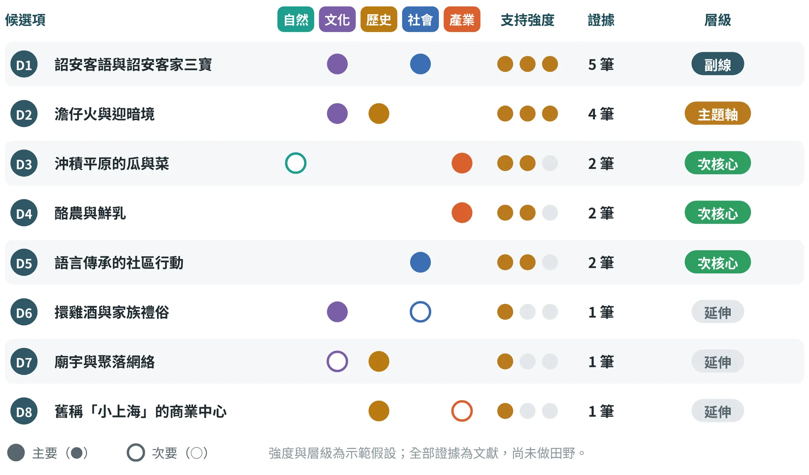
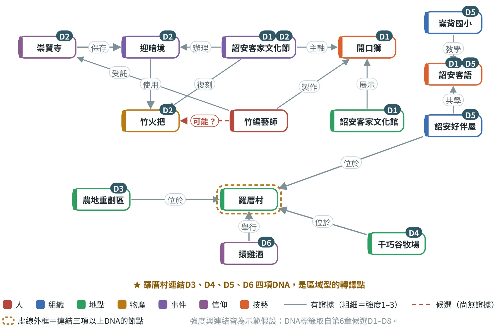
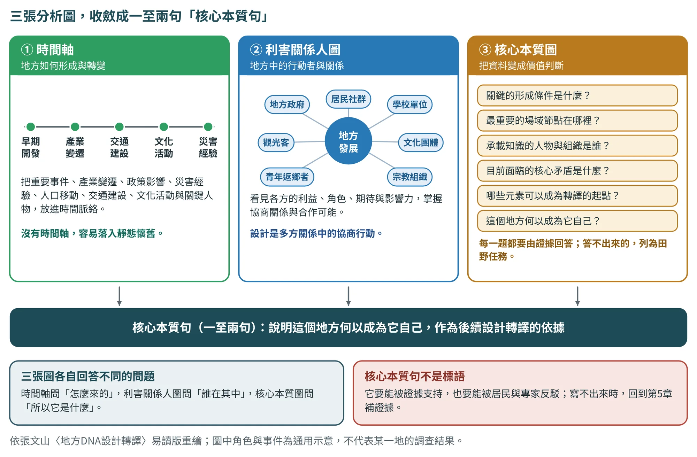
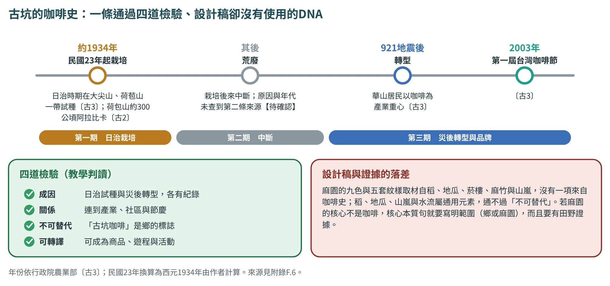

DNA萃取與脈絡分析
從證據矩陣走到DNA層級，再看DNA之間怎麼連結
6.1從證據到DNA：七個步驟#
第2章說明了DNA是什麼、有哪五類、怎麼分層；這一章要做的是「實際操作」。輸入是第5章的證據矩陣，輸出是DNA證據表（成果1）與脈絡分析圖（成果5）。表6.1把整個過程拆成七個步驟，每一步都有可交的產出。
| 步驟 | 做什麼 | 產出 | 最常見的錯誤 |
|---|---|---|---|
| ① 逐筆編碼 | 把每筆證據標上自然、文化、歷史、社會、產業的主要（●）或次要（○）類別 | 證據矩陣的「DNA類別」欄 | 一筆證據只貼一個標籤；或把「很有特色」當成類別 |
| ② 合併同義 | 把說法不同、指同一件事的項目合併，並標示跨類關聯 | DNA候選清單 | 把「火把」「澹仔火」「迎暗境」拆成三項，或硬把不同的事併在一起 |
| ③ 給強度 | 依支持證據的數量與獨立程度，給1–3分 | 強度欄＋支持證據編號 | 用感覺給分；不看是否走了不同的路 |
| ④ 四道檢驗 | 成因、關係、不可替代、可轉譯四題逐項回答 | 檢驗表（見第2章） | 只通過前一兩題就稱為DNA |
| ⑤ 分層 | 核心（主題軸、副線）、次核心、延伸 | 層級欄＋選擇理由 | 全部都想當核心；單一來源也升級 |
| ⑥ 寫DNA卡 | 每項核心與次核心DNA寫一張卡，含證據與待確認 | DNA卡 | 把推測寫成事實；不寫待確認 |
| ⑦ 居民檢核 | 請居民與文史工作者檢查「像不像、有沒有漏、哪裡不對」 | 檢核紀錄與修正版 | 省略這一步，直接進入設計 |
6.2編碼與合併：12筆證據變成8項候選#
編碼的重點，是「同一件事只算一項，一項可以跨類」。崙背示範的做法是：先把12筆證據逐筆編碼，再把說法不同、指向同一件事的證據併在一起。例如，「澹仔火」（竹火把）〔崙3〕〔崙5〕〔崙7〕、「迎暗境」〔崙2〕〔崙3〕與「顧更」〔崙4〕〔崙7〕，說的都是同一條線索，因此合併成D2；而〔崙3〕提到的西螺「迎夜景」是起源的另一種說法，則並列處理、不併入（第5章）。表6.2是合併的結果。
| 編號 | 候選項 | 類型 | 支持證據 | 內容摘要（依證據） |
|---|---|---|---|---|
| D1 | 詔安客語與詔安客家三寶 | 文化● 社會● | E04、E05、E06、E07、E12 | 全台最密集的詔安客聚落；語言面臨流失；開口獅、七嵌武術、布袋戲為三寶 |
| D2 | 澹仔火與迎暗境 | 文化● 歷史● | E01、E02、E03、E04 | 竹火把顧更巡庄的習俗，如今只剩水汴頭完整保留，2025年登錄縣民俗 |
| D3 | 沖積平原的瓜與菜 | 自然○ 產業● | E09、E10 | 濁水溪中游土壤；洋香瓜、結球萵苣；924公頃的農地方格 |
| D4 | 酪農與鮮乳 | 產業● | E11、E12 | 酪農專區、牧場型觀光工廠、鮮乳品牌 |
| D5 | 語言傳承的社區行動 | 社會● | E06、E07 | 老幼共學、客語生活學校與合唱團 |
| D6 | 擐雞酒與家族禮俗 | 文化● 社會○ | E08 | 羅厝村正月十五的報喜與分享，「四點金」象徵圓滿 |
| D7 | 廟宇與聚落網絡 | 文化○ 歷史● | E11 | 鄉內26座寺廟（2012年資料），可作聚落背景 |
| D8 | 舊稱「小上海」的商業中心 | 歷史● 產業○ | E11 | 早年為雲林西部商業中心，現況待田野確認 |
類型欄的「●」為主要、「○」為次要。證據編號對應第5章的證據矩陣（E01–E12）。這個歸納僅依公開報導，屬教學示範示範假設。
編碼的方法立場也要交代清楚。主題分析可以參考Braun與Clarke的反思式主題分析：反覆閱讀、編碼，再發展與修訂主題〔文13〕。本書的五類DNA矩陣是教學用的整理框架，並不等同於所有主題分析的流派。若採反思式主題分析，不應把編碼者意見完全一致當作唯一的品質證明；若採固定碼本的內容分析，則要說明編碼規則與一致性的檢查方式。研究生要交代自己的分析立場，避免把不同方法的要求混成一套名詞。
6.3強度與層級：證據決定誰是主角#
有了候選項，下一步是用支持證據決定層級（圖6.1）。這張圖把崙背的8項候選放在一起：每一列顯示類別（五個欄位的圓點）、支持強度（三顆圓點）、證據筆數，與最後的層級。判讀規則仍是三角檢證：核心DNA須有兩種以上獨立來源，單一來源只列延伸。

表6.3說明為什麼這樣分層，以及每一層要特別注意的事。
| 層級 | DNA | 選擇理由 | 需注意 | |
|---|---|---|---|---|
| 主題軸 | D2 澹仔火與迎暗境 | 同時有縣民俗登錄（E02）、事件報導（E01）、歷史與語言脈絡（E03）與文化節報導（E04）；又有竹火把這件具體物件，可以轉成商品 | 民俗名稱與意象須取得保存者同意 | |
| 副線 | D1 詔安客語與詔安客家三寶 | 有五筆證據，是崙背最廣的身分線索；語言可轉成故事卡的一句客語，文化館與文化節提供通路 | 客語用字與讀音須審訂；三寶不能被簡化成圖案 | |
| 次核心 | D3 沖積平原的瓜與菜 D4 酪農與鮮乳 D5 語言傳承的社區行動 | 各有兩筆證據。D3、D4是瓜乳禮盒的素材，D5支持客語審訂與故事卡 | D3的面積資料逾十年；D4部分來自商業報導 | |
| 延伸 | D6 擐雞酒與家族禮俗 D7 廟宇與聚落網絡 D8 舊稱「小上海」的商業中心 | 各只有一筆證據，只作故事背景或後續另案，不作主軸 | 須田野補強，才能升級 | |
實踐案例 一項誠實的提醒：示範的「三角」還沒有完成 D2有四筆來自不同媒體與機構的報導，所以暫列為主題軸。但這四筆全部屬於「文獻」這一條路；依第5章的標準，三角檢證還沒有完成。因此示範把D2標為待確認，要等現場觀察、訪談崇賢寺與居民審訂之後，才能成為定論。 把這個限制寫進成果，是教科書要你養成的習慣：寧可寫「暫列、待補」，也不要把還沒查證的判斷，寫成已經確定的結論。 | ||||
6.4DNA卡與居民檢核#
每一項核心與次核心DNA，都要寫成一張DNA卡（格式見第2章）：名稱、類型、一句話描述、證據編號、層級、為什麼不可替代、可轉譯方向、待確認事項。DNA卡寫完，要拿去給人看，這就是第七步：居民檢核。
張文山在品質規範裡，把「地方共識」列為研究品質的一項：設計成果須經居民、地方工作者或文史專家檢核，並用5點量表加開放意見，評估「像不像這個地方、是否適切、是否願意使用或推薦」。DNA階段的檢核，可以先用更簡單的做法：
- 找3到5位不同角色的人（居民、職人、地方組織成員、文史工作者），每人10到15分鐘。
- 把每張DNA卡的「一句話描述」念給他們聽，請他們用1到5分評「像不像這個地方」，並回答「有沒有漏掉什麼」「哪裡說得不對」。
- 少數意見不要刪：只有一位居民提出的修正，也要記下來，並判斷是否需要補第二來源。
檢核人數、分數門檻等操作細節為本書建議，各組可依場域規模調整；檢核表請記入範本04與範本12。
6.5脈絡分析圖：先做資料表，再畫圖#
DNA候選整理好之後，要看它們之間「怎麼連在一起」：哪些人、組織、地點、物產、事件、信仰與技藝，把不同的DNA串成一個網絡？這就是成果5脈絡分析圖的工作。原表指定使用draw.io繪製；張文山的方法特別提醒：先完成關係資料表，再畫圖，避免脈絡圖變成「漂亮但沒有證據的心智圖」。
一、節點與關係：把圖拆成兩張表
Node-Edge（節點—關係）資料表由兩張表組成：節點表記錄「是什麼」，關係表記錄「怎麼連」。節點可分七類：
| 節點類型 | 例子（崙背） |
|---|---|
| 人 | 竹編藝師、廟方管理者、課後照顧班的老師 |
| 組織 | 崙背國小、詔安好伴屋、文化節主辦單位 |
| 地點 | 羅厝村、農地重劃區、詔安客家文化館 |
| 物產 | 竹火把（材料與器物）、洋香瓜、鮮乳 |
| 事件 | 迎暗境、詔安客家文化節 |
| 信仰 | 崇賢寺、擐雞酒習俗 |
| 技藝 | 開口獅、竹編、詔安客語（語言與無形技能一併歸入） |
關係表至少有六個欄位：來源節點、關係、目標節點、方向、強度1–3、證據來源。強度的給法建議如下，並要在表中寫明（本書建議）：3＝官方記載，或兩筆以上互相獨立的可信來源（民間網站不計）；2＝單一可信來源；1＝只有間接說法；0＝候選，尚無證據，用虛線畫出，並轉為田野任務。
二、崙背示範：14個節點、15條關係
圖6.2是依崙背示範的證據畫出的脈絡圖，表6.4是它的關係表。圖上每個節點右上角的小標籤是它所屬的DNA；實線的粗細代表強度；紅色虛線是「候選」，也就是我們覺得可能有關、但目前沒有證據的連結。

| 來源節點 | 關係 | 目標節點 | 方向 | 強度 | 證據 |
|---|---|---|---|---|---|
| 崇賢寺 | 保存 | 迎暗境 | → | 3 | E01 E02 |
| 迎暗境 | 使用 | 竹火把 | → | 3 | E01 E03 |
| 詔安客家文化節 | 辦理系列活動 | 迎暗境 | → | 2 | E01 |
| 詔安客家文化節 | 發放復刻火把 | 竹火把 | → | 2 | E05 |
| 詔安客家文化節 | 以三寶為主軸 | 開口獅 | → | 2 | E04 |
| 竹編藝師 | 受託製作竹編裝置 | 崇賢寺 | → | 2 | E05 |
| 竹編藝師 | 製作竹編開口獅 | 開口獅 | → | 2 | E05 |
| 竹編藝師 | 可能製作（待田野） | 竹火把 | → | 0（候選） | 無（候選） |
| 詔安客家文化館 | 展示 | 開口獅 | → | 2 | E12 |
| 崙背國小 | 教學與傳承 | 詔安客語 | → | 2 | E07 |
| 詔安好伴屋 | 老幼共學 | 詔安客語 | → | 2 | E06 |
| 詔安好伴屋 | 位於 | 羅厝村 | → | 2 | E06 |
| 擐雞酒 | 舉行於 | 羅厝村 | → | 3 | E08 |
| 千巧谷牧場 | 位於 | 羅厝村 | → | 2 | E12 |
| 農地重劃區 | 位於 | 羅厝村 | → | 2 | E10 |
關係與強度為依證據矩陣整理的示範判斷示範假設；證據編號對應第5章。表中「位於羅厝村」的關係，是依報導所載村名整理，現址仍須現場確認待確認。
三、高潛力轉譯點：同時連結多項DNA的節點
脈絡圖最大的用途，是找出「高潛力轉譯點」：同時連結多項DNA、而且有機會變成體驗或商品的節點。操作方法很簡單：對每個節點，數一數它自己加上「有證據的鄰居」一共連到幾項DNA（表6.5）。
| 節點 | 連結的DNA | 連結數 | 判讀（示範假設） | |
|---|---|---|---|---|
| 羅厝村 | D3、D4、D5、D6 | 4 | 區域型：適合串成遊程或多站導覽；但「位於同一村」不等於彼此有關，不能直接當成商品題材 | |
| 迎暗境 | D1、D2 | 2 | 主題型：D2的核心事件，但名稱與意象使用須先取得保存者同意 | |
| 詔安客家文化節 | D1、D2 | 2 | 通路型：串起迎暗境、竹火把與三寶，適合作為展售與測試場域 | |
| 開口獅 | D1、D2 | 2 | 符號型：D1的重要視覺線索；兩種寫法並存，使用前須確認 | |
| 竹火把 | D1、D2 | 2 | 物件型：連到迎暗境與文化節，是商品最具體的素材；與竹編的連結待田野 | |
| 竹編藝師 | D1、D2 | 2 | 橋接型：竹編裝置同時連到崇賢寺（D2）與開口獅（D1）；若能延伸到竹火把，就是商品的工藝來源，但那條連結目前只是候選 | |
常見錯誤 初學者容易犯的錯
| ||||
6.6時間軸、利害關係人圖與核心本質句#
6.5節的脈絡分析圖，處理的是「DNA之間怎麼連」。作者的易讀版在資料蒐集之後，還要求另一道收斂工作：核心萃取。地方研究不是資料越多越好，而是要能判斷哪些資料真的重要。這個階段有三個工具：時間軸、利害關係人圖與核心本質圖（Core Essence Map）。它們各自回答不同的問題，最後收斂成一至兩句「核心本質句」（圖6.3）。

時間軸：地方如何形成與轉變
時間軸協助我們理解地方如何形成與轉變。重要事件、產業變遷、政策影響、災害經驗、人口移動、交通建設、文化活動與關鍵人物，都可以放進時間軸，形成地方演化的脈絡。沒有時間軸的地方設計，容易落入靜態的懷舊；有時間軸的地方設計，才可能理解地方的變化與未來方向。做法很直接：把證據矩陣的「年份」欄拉出來依序排列，標出轉折點（產業、政策、災害、交通），並在每個轉折點前後各寫一句「地方的生活因此改變了什麼」。
利害關係人圖：誰在其中
利害關係人圖協助研究者辨識地方裡的行動者。地方政府、居民、商家、學校、社區組織、文化團體、宗教組織、觀光客、青年、外來投資者與設計團隊，各有不同的利益與期待。地方設計不是單純的美感決策，而是多方關係中的協商行動。表6.6是建議的欄位。
| 角色 | 與地方的關係 | 期待與擔憂 | 在本專案中如何合作 |
|---|---|---|---|
| 居民與社群 | 長期生活者與知識持有者 | 地方被理解還是被消費？ | 檢核、共創與同意（6.4、第15章） |
| 宗教與文化組織 | 儀式、空間與象徵的保存者 | 詮釋與使用是否被尊重 | 授權與審訂（15.3） |
| 地方政府與學校 | 資源、政策與教育場域 | 政策目標、成效與持續性 | 移交與維運（18.9） |
| 商家與職人 | 產業技術與通路 | 成本、客源與分潤 | 商品與服務設計（第10、11章） |
| 青年與返鄉者 | 新的行動者 | 能否有工作與參與的入口 | 工作坊、實習與合作 |
| 訪客與外部夥伴 | 使用者、投資者與設計團隊 | 體驗品質、合作條件 | 測試與驗證（第12章） |
角色類型依張文山〈地方DNA設計轉譯：從地方知識萃取到永續設計實踐的方法論〉（易讀版，2026年7月）整理；欄位與合作方式為本書建議，內容須以場域調查為準。
核心本質圖：把資料變成價值判斷
核心本質圖是把分散資料轉成地方本質圖的工具。它不只是資訊整理，而是價值判斷：研究者要回答六個問題（表6.7），每一題都要由證據回答；答不出來的，不要硬寫，列為田野任務，回到第5章補證據。
| 要回答的問題 | 從哪裡找答案 | 答不出來時 |
|---|---|---|
| 這個地方最關鍵的形成條件是什麼？ | 時間軸的轉折點、自然與歷史類DNA | 回第5章補文獻與檔案 |
| 最重要的場域節點在哪裡？ | 脈絡分析圖的高潛力轉譯點（表6.5） | 補田野踏查 |
| 哪些人物或組織承載地方知識？ | 利害關係人圖、訪談紀錄 | 列入受訪者名單與田野任務 |
| 地方目前面臨的核心矛盾是什麼？ | 訪談中的期待與憂慮、參與觀察 | 補訪談與參與觀察 |
| 哪些元素可以成為設計轉譯的起點？ | 核心與次核心DNA、四道檢驗的結果 | 回6.3節重新檢視層級 |
| 這個地方何以成為它自己？ | 前五題的回答彙整 | 先不寫；回頭補前五題 |
前五個問題依張文山〈地方DNA設計轉譯：從地方知識萃取到永續設計實踐的方法論〉（易讀版，2026年7月）整理；第六題為本書歸納，作為核心本質句的起點。
核心本質句：一至兩句話，說明地方何以成為它自己
六個問題答完，就可以寫「核心本質句」。它的任務，是說明這個地方何以成為它自己，作為後續設計轉譯的依據。好的核心本質句要能被證據支持，也要能被居民與專家反駁；它不是宣傳標語，不靠華麗的形容詞，而是用名詞與動詞，把成因、關係與不可替代性放進一句話。表6.8用崙背示範，對照三種常見的寫法。
| 寫法 | 問題 | 較好的寫法示範假設 |
|---|---|---|
| 崙背是一個充滿人情味的農業鄉鎮 | 放在哪個鄉鎮都成立，通不過「不可替代」檢驗 | 崙背是以詔安客語與迎暗境的火光，讓農業庄頭在夜裡共同聚集的地方 |
| 崙背擁有豐富的文化資產 | 只是資源清單，沒有成因與關係 | 同上：點出「因什麼形成、與誰有關」 |
| 崙背是瓜果與鮮乳之鄉 | 只回答「有什麼」，沒有回答「為什麼是這裡」 | 把農業放回關係中：農業是延伸線索，文化活動是主題軸 |
崙背內容依公開報導整理，為教學示範，尚未經田野與居民檢核，不是結論待確認。核心本質句應在證據矩陣、DNA層級與居民檢核之後才定稿。
時間軸的實例：古坑的咖啡史
時間軸的用處，是讓「哪些事有紀錄、哪些事只是說法」一眼看出來。古坑的咖啡史（圖6.4）很適合練習：約民國23年（西元1934年，作者換算）起，日本人在大尖山、荷苞山一帶試種咖啡，荷包山曾有約300公頃的阿拉比卡〔古2〕〔古3〕；其後栽培中斷，原因與年代沒有查到第二條來源待確認；921地震之後，華山居民以咖啡為產業重心；2003年舉辦第一屆台灣咖啡節〔古3〕。這條時間軸有三期、四個節點、兩條獨立的路徑，通過四道檢驗，是古坑目前唯一站得住的DNA。
可是作者的設計說明卡〔古1〕裡，九色與五套紋樣取材自稻、地瓜、菸樓、麻竹與山嵐，沒有一項來自咖啡史。這不是說設計不好，而是說：設計取的元素，和證據站得住的DNA，不在同一條線上。若麻園的核心不是咖啡，核心本質句就要寫明範圍是「鄉」還是「麻園」，並補上麻園自己的田野。

九個案例的核心本質句，以及它們可以被怎麼反駁
核心本質句要能被證據支持，也要能被居民與專家反駁（表6.8）。表6.9用九個案例各寫一句，並在右欄寫出「最可能被反駁的地方」。右欄來自各案例驗證卡裡的缺口（17.6節），不是新的批評。請注意，這九句是本書依現有文件寫的教學示範，不是各地方的官方定位，須與居民和專家檢核後才能使用。
| 案例 | 核心本質句（本書依文件寫的教學示範） | 最可能被反駁的地方 |
|---|---|---|
| 鳥取 | 鳥取是以千代川搬運的砂與海風堆成的砂丘為地景根基、並因水木茂出身於境港而把「看不見的存在」變成地方公共敘事的縣。 | 「慢生活與幸福度高」沒有出處；居民若不認同，「自然×文化×慢生活」一句話就少了一角。 |
| 居鑾 | 居鑾是一座因1909年鐵道通車而成形的車站城市；車站同時是交通節點、咖啡店的所在，也是居民日常聚集的地方。 | 跨族群與自然DNA都沒有來源；「以車站為中心的城市結構」其他鐵道城鎮也有類似形態。 |
| 怡保 | 怡保是近打谷錫礦的移民財富與喀斯特石灰岩地景共同塑造的城市；火災後重建的老城格網與咖啡店，是這段歷史留在日常裡的樣子。 | 白咖啡的起源說法不一；起源若被推翻，「錫礦×老城×白咖啡」的第三角要改寫。 |
| 斗南 | 斗南（他里霧）是以車站、糖鐵與台鐵倉庫為中心、主要節點都在步行可達距離內的小鎮；碾米、醬油、養鴨、竹筍與戲偶等職人，在這個中心周圍累積了數代的手藝。 | 「步行可達」只有作者的距離估算；實測的節點間距若超出預期，「小鎮尺度」就不成立。 |
| 古坑 | 古坑以日治時期荷包山一帶的咖啡栽培聞名〔古3〕；麻園的核心本質句要待田野證據之後才能寫，現有設計說明卡只能寫到「稻、地瓜、菸樓、麻竹與山嵐構成的山田地景」。 | 核心本質句要等田野之後才能寫；稻、地瓜與山嵐屬通用元素，通不過「不可替代」。 |
| 土庫 | 土庫是北港進香路上的中繼城鎮：香客在此歇腳吃買，順天宮與六房媽的輪祀把聚落連成一圈，糖鐵與油醬產業則是這個商旅小鎮留下的生計。 | 最大的投資（旅店與可可）與「進香中繼」無關時，核心句與提案主軸就成了兩件事。 |
| 北港 | 北港（舊稱笨港）是以朝天宮媽祖信仰與每年迓媽祖繞境聚起人潮的信仰之城；信仰的人潮如何接上日常的商業生活，是它的轉譯課題。 | 同一份簡報有兩種人口數字（38,437與28,870），「信仰之城」的人潮口徑要先對齊。 |
| 鹿谷 | 鹿谷是林鳳池自武夷山帶回軟枝烏龍茶種而成就凍頂烏龍的茶鄉；茶、竹、米、筍在三面環山的紅壤台地與沖積土上長成。 | 竹與筍在鄰近的竹山更為知名；「茶、竹、米、筍」並列時，不可替代性要分開評。 |
| 埔里 | 埔里是群山環抱的盆地，盆地的水讓酒、紙與桃米的生態各自長成不同的產業與社區行動。（教學示範；水質證據待補） | 「水」缺水質資料，三條線索都是業者或媒體的敘事；若水質資料不支持，核心句要改。 |
核心句依各案例文件改寫，來源編號見附錄F.6；古坑的核心句只寫到文件能支持的範圍。
6.7竹山示例：從節點資料到三個優先機會點#
換一個角度看，竹山示範的分析過程可以拆成五個層次（表6.10）。從資料線索到設計假設，每往下一層，推論的成分就多一點，所以每一層都要同時寫下「需要保留的疑問」：它提醒我們，主題候選還沒有居民的回應，魅力提案還沒有旅客的檢驗，設計假設也還沒有通過材料與安全的確認。
| 分析層次 | 竹山示範 | 需要保留的疑問 |
|---|---|---|
| 資料線索 | 竹器、打鐵、竹筍飲食與街區活化的記錄 | 各項現況與歷史關係需要回訪 |
| 初步編碼 | 材料利用、工具分工、技藝延續、日常使用 | 是否只聽到成功經營者的說法？ |
| 主題候選 | 竹產業與竹工藝構成地方生活網絡 | 其他產業在居民生活中占什麼位置？ |
| 魅力提案 | 讓旅客理解一根竹子如何進入日常生活 | 旅客是否真的理解、也有興趣？ |
| 設計假設 | 竹杯續作包，銜接手作與回家後的使用 | 材料、包裝與安全能否成立？ |
6.8AI協作：讓AI整理關係候選，由人確認#
DNA階段，AI最適合做的是「整理與核對」：把證據分類、建議合併、把訪談與資產清單轉成關係候選。最不該做的，是替你判定核心DNA，或決定哪一條關係是真的。下面兩段提示詞分別用於整理關係，以及讓AI「檢查」你已經做好的DNA層級。
將我提供的人、組織、地點、物產、事件、信仰與技藝整理成Node-Edge表，欄位為來源節點、關係、目標節點、方向、強度1–3、證據來源；找出同時連結多個DNA的高潛力轉譯點，但不要把「共現」自動判成因果。只依據我提供的資料；證據不足的關係標「待確認」，並列出需由居民、專家或設計者確認的項目。
提示詞出自張文山〈AI協作Prompt增補版〉（2026-10-06修訂，第三版-2）的「脈絡分析圖」；最後一句為本書依同一原則補充。
以下是我整理的DNA候選表（含類別、層級、支持證據編號）與證據矩陣。請只依據這兩份資料，逐項檢查：①列為核心或次核心的項目，是否至少有兩條不同的來源路徑（文獻、田野、訪談、影像）；②只有單一來源的項目，是否被升級；③證據之間是否有互相矛盾。不要替我改層級，也不要補寫資料中沒有的地方事實；只列出疑問與建議的查證方式。
這一則是讓AI擔任「檢查者」而不是「決定者」。AI列出的疑問仍須人工核對原始證據；第13章會再說明人機分工。